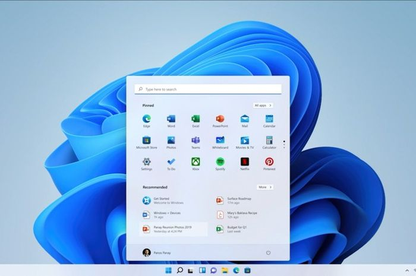
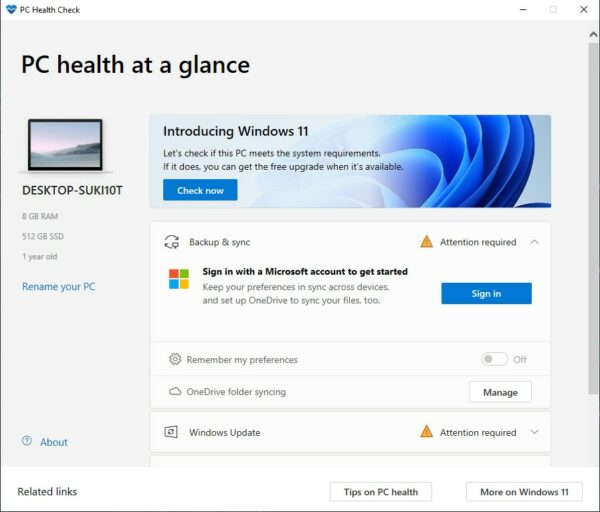
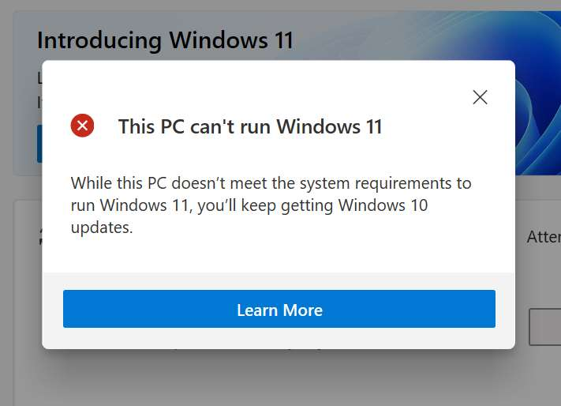
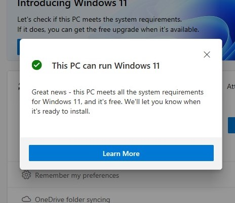

Cara Upgrade Windows 11 Dari Windows 10, Mudah

Microsoft resmi mengumumkan kehadiran Windows 11. Kabar baiknya, para pengguna Windows 10 dapat melakukan upgrade ke Windows 11 dengan cara yang mudah dan gratis melalui fitur Windows Update. Bagaimana cara update Windows 11?
Sistem operasi Windows 11 sendiri baru akan digulirkan ke pengguna umum mulai Oktober 2021 mendatang. Tapi sebelum itu, Microsoft akan merilis terlebih dahulu Windows 11 ke pengguna yang telah terdaftar ke Insider Program.
Nah, sembari menunggu kehadiran update Windows 11 gratis yang datang secara bertahap, ada baiknya Anda mengetahui spesifikasi minimum dari laptop atau PC yang dimiliki. Berikut spesifikasi minimalnya:
- Prosesor: 1GHz atau lebih cepat dengan 2 inti atau lebih di prosesor 64-bit yang kompatibel.
- RAM: 4 GB
- Memori penyimpanan: 64 GB atau lebih besar
- Firmware sistem: UEFI, Secure Boot capable
- TPM: Trusted Platform Module (TPM) versi 2.0
- Kartu grafis: Kompatibel dengan DirectX 12 atau yang lebih baru dengan driver WDDM 2.
- Layar: Layar dengan resolusi 720p yang ukuran diagonalnya lebih besar dari 9 inch, 8 bit per channel warna.
- Koneksi internet dan akun Microsoft: Windows 11 Home membutuhkan koneksi internet dan akun Microsoft untuk menyelesaikan setup perangkat saat pertama kali digunakan.
Cara Upgrade Windows 10 ke Windows 11
Seperti yang sudah kami katakan sebelumnya, Microsoft memberikan spesifikasi minimum untuk laptop atau PC sebelum melakukan update dari Windows 10 ke Windows 11.
Cara yang lebih mudah untuk mengecek apakah Anda memenuhi syarat untuk upgrade dari Windows 10 ke Windows 11 secara gratis adalah dengan mengunduh aplikasi PC Health Check di Situs resmi microsoft.

Jalankan aplikasi tersebut, dan tekan tombol Check Now di bagian atas. Selanjutnya, sistem akan mendeteksi apakah perangkat Anda memenuhi syarat untuk melakukan pembaruan atau tidak.


Setelah Windows 11 nantinya tersedia resmi, Anda bisa langsung mengunduhnya seperti update software biasa. Cara upgrade Windows 10 ke Windows 11 yaitu dengan masuk ke Settings > Update & Security > Windows Update.
Klik tombol Check for Updates. Jika OS terbaru Microsoft sudah digulirkan, tinggal download dan install serta ikuti petunjuk selanjutnya.
Itulah cara update Windows 10 ke Windows 11. Sekarang, mari kita tunggu peluncuran resminya, ya!